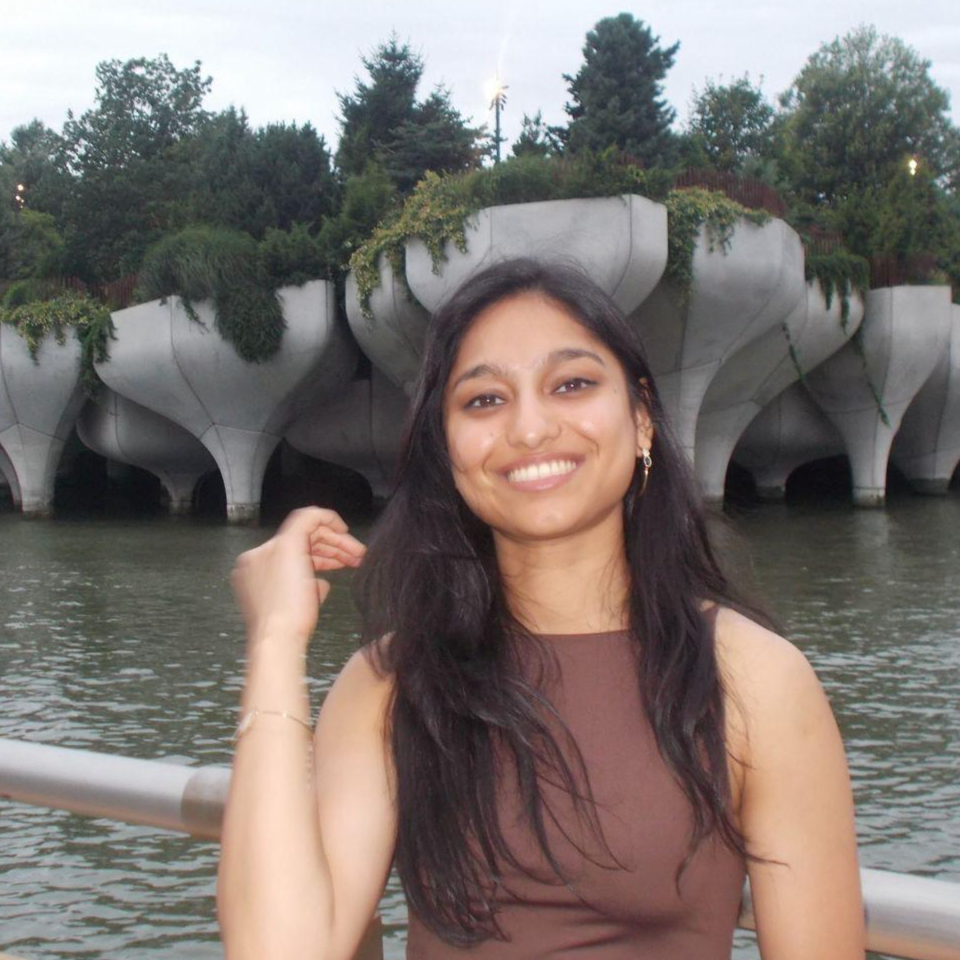
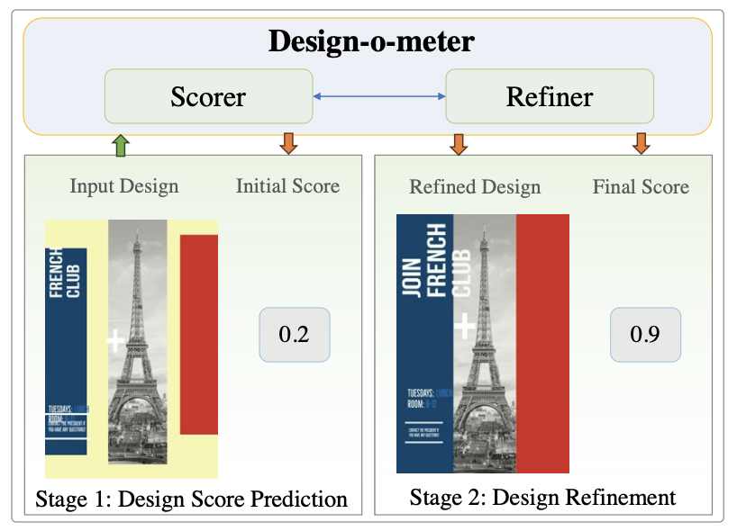
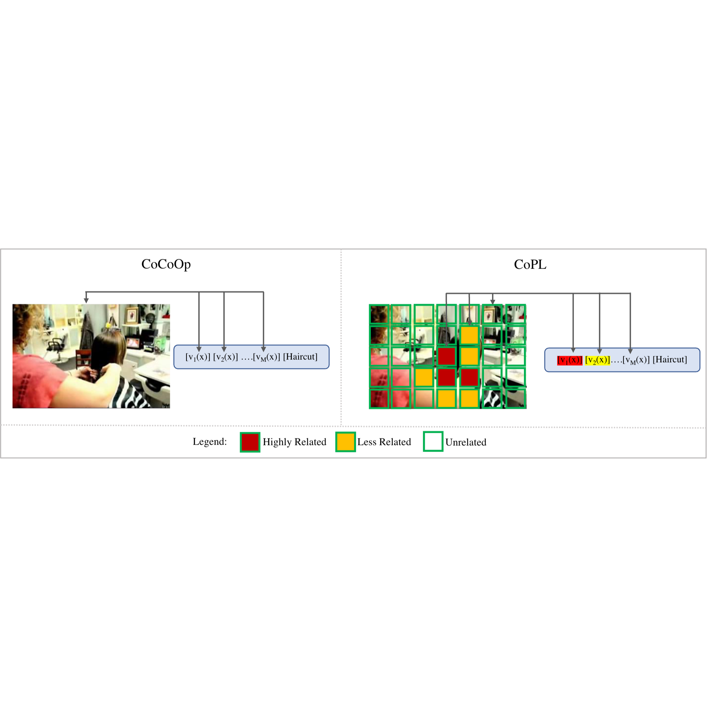
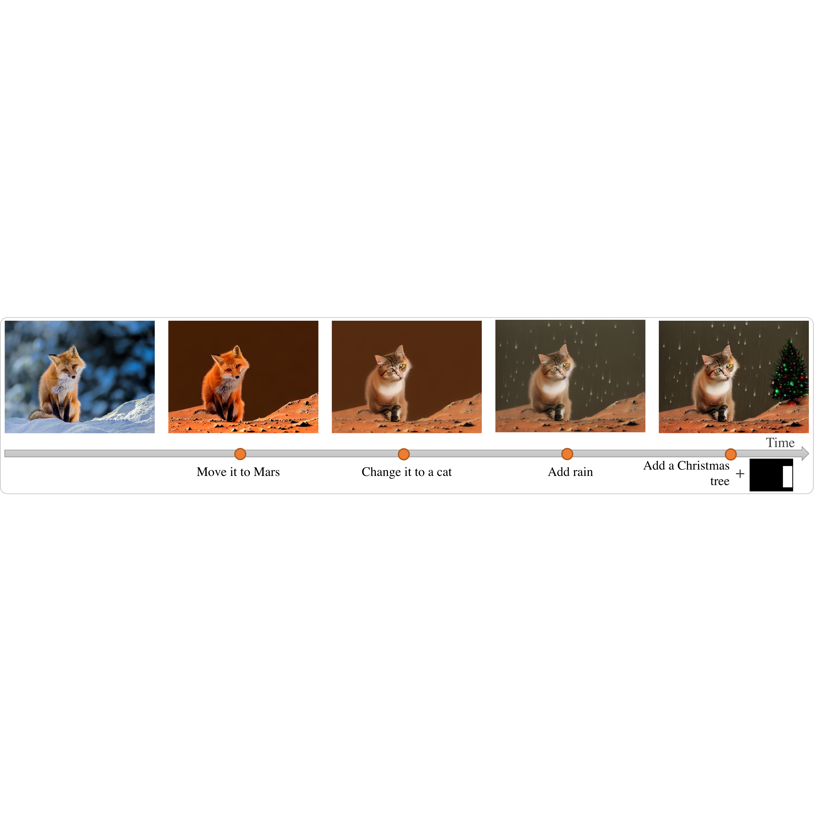
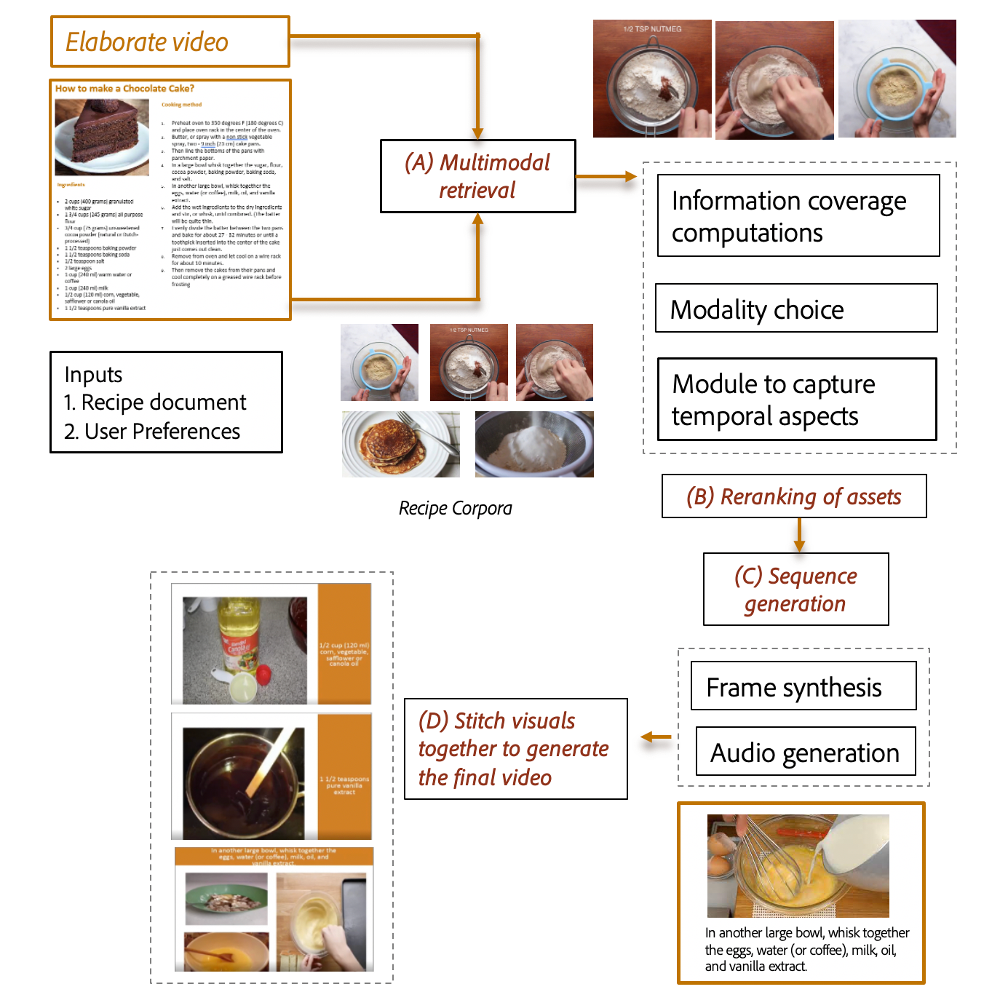
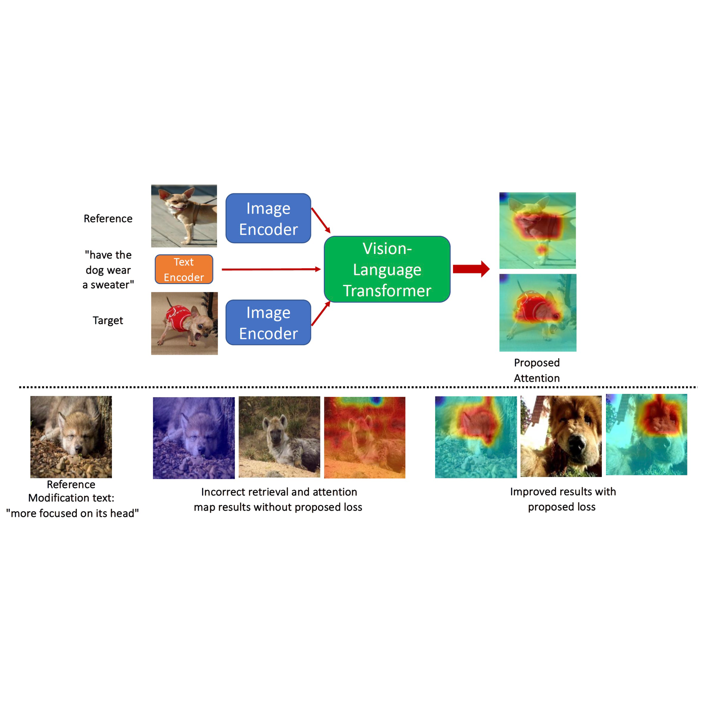
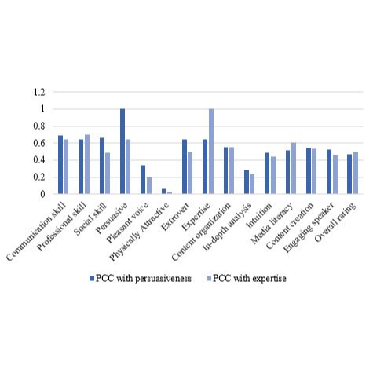
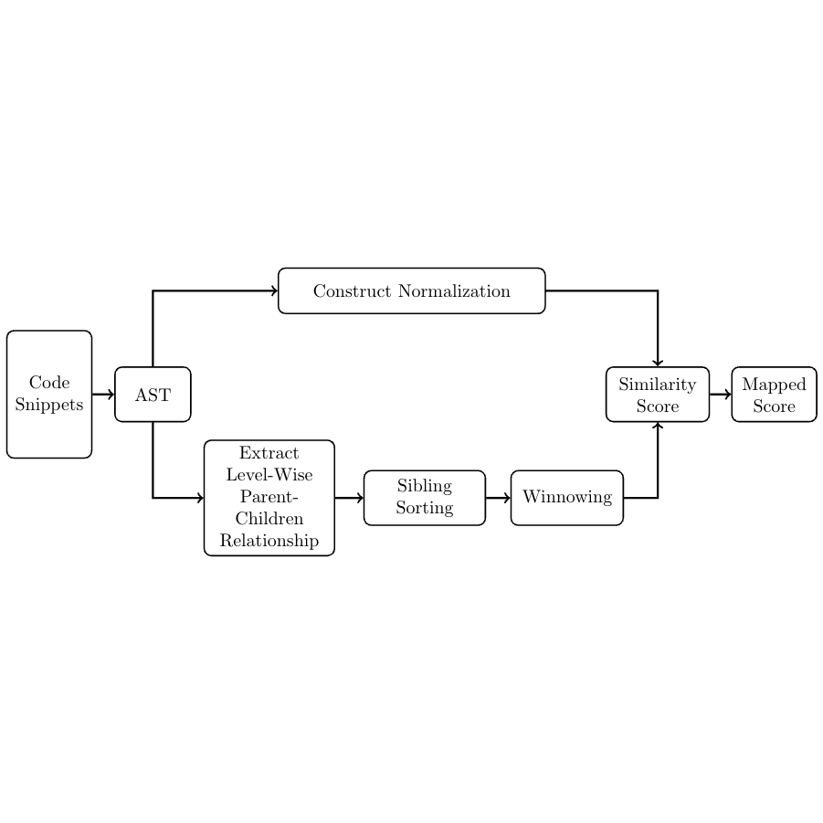

|
Prateksha Udhayanan
I am a second-year PhD student in the Department of Computer Science at the University of Maryland, advised by Prof. Abhinav Shrivastava.
Before joining UMD, I worked as a Research Associate at Adobe Research, where I worked on projects spanning retrieval, editing, and generation for images, videos, and graphic designs.
I received my Bachelor’s and Master’s in Computer Science Engineering with a specialization in Artificial Intelligence and Machine Learning from IIIT Bangalore.
During my undergraduate studies, I spent three months as a research intern at Adobe Research, working
with Balaji Vasan Srinivasan and Stefano Petrangeli on
document-to-video transformation. I also worked on anomaly detection in procedural videos, with Varghese Alex and Vinay Sudhakaran during my summer internship at Siemens.
I had the opportunity to explore various projects during my undergraduate studies with Prof. Dinesh Babu Jayagopi, including analyzing speaker behaviour in videos for virtual meeting scenarios and
hand-gesture estimation for Indian Sign Language synthesis on human avatars.
CV /
Google Scholar /
LinkedIn
|

|
Research
My research interests are in computer vision, with a primary focus on generative models. I am currently working on image generation models,
and have previously worked on adding controllability to the image generation process and evaluating motion quality in video generation.
|
|

|
Design-o-meter: Towards Evaluating and Refining Graphic Designs
Sahil Goyal, Abhinav Mahajan, Swasti S. Mishra, Prateksha Udhayanan,
Tripti Shukla, KJ Joseph,
Balaji Vasan Srinivasan
WACV 2025
We propose Design-o-meter, a data-driven methodology to score and refine graphic designs.
|
|

|
CoPL: Contextual Prompt Learning for Vision-Language Understanding
Koustava Goswami, Srikrishna Karanam, Prateksha Udhayanan, KJ Joseph,
Balaji Vasan Srinivasan
AAAI 2024
We propose Contextualized Prompt Learning (CoPL), a prompt learning method that adapts prompt weights dynamically and aligns the prompt vectors with local image features.
|
|

|
Iterative multi-granular image editing using diffusion models
KJ Joseph, Prateksha Udhayanan, Tripti Shukla,
Aishwarya Agarwal, Srikrishna Karanam, Koustava Goswami, Balaji Vasan Srinivasan
WACV 2024
We present a training-free framework for iterative, multi-granular image editing, along with IMIE-Bench, a new benchmark dataset for evaluating the proposed task.
|
|

|
Recipe2Video: Synthesizing Personalized Videos from Recipe Texts
Prateksha Udhayanan, Suryateja BV,
Parth Laturia, Dev Chauhan, Darshan Khandelwal, Stefano Petrangeli, Balaji Vasan Srinivasan
WACV 2023
We present a novel deep-learning driven system - Recipe2Video that automatically converts a recipe document into a multimodal illustrative video.
|
|

|
Learning with multi-modal gradient attention for explainable composed image retrieval
Prateksha Udhayanan, Srikrishna Karanam,
Balaji Vasan Srinivasan
arXiv
We propose a gradient-attention-based learning objective for composed image retrieval, that explicitly forces the model to focus on the local regions of interest being modified in each retrieval step.
|
|

|
Multimodal Unsupervised Domain Adaptation for Predicting Speaker Characteristics from Video
Chinchu Thomas, Prateksha Udhayanan , Ayush Yadav, Seethamraju Purvaj, Dinesh Babu Jayagopi
SN Computer Science 2024
We propose a multimodal unsupervised domain adaptation method to predict the persuasiveness and expertise of the speaker in a video
|
|

|
Source-Code Similarity Measurement: Syntax Tree Fingerprinting for Automated Evaluation
Arjun Verma, Prateksha Udhayanan, Rahul Murali Shankar, Nikhila Kn, Sujit Kumar Chakrabarti
AI-ML Systems 2021
We propose an AST-based method to compute similarity score between two source codes, focusing on their structure rather than their functional outputs.
|
|
{kind=link}